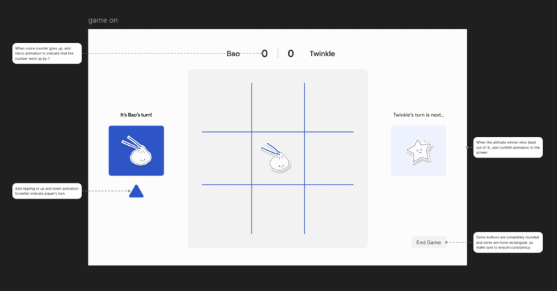

I met with two designers to present and receive feedback for my game on project. One of these designers has a background in graphic design and software engineering and the other has a background in UI/UX design. They've both worked on projects and products ranging from hackathons to internships, which make their design opinions stronger. I believe that all types of users can provide visual design critiques that are valid, but I did end up receiving feedback from people that have a background in design.
After presenting my designs, I received really similar notes from both designers that I talked with. An aspect of my design that they thought was one of the strongest was the branding because of the easy to digest, familiar, and vibrant color palette, as well as the playful graphics that simulated stickers. They also appreciated the minimalistic and clean UI, making the experience easy to understand and play. They stated that nothing in my designs were confusing, which made my game feel more inviting and fun to play.
In terms of visual design, some feedback I received that I can improve on are adding more hover effects and subtle animations. To make my game feel more alive and less static, I can make the arrow ripple or move up and down when indicating whose turn it is to play. I could also add confetti for the ultimate winner once someone gets a final winning score of 3. I also got a suggestion where each player could drag their character onto the game board to place their pick so that it could imitate actual stickers being stuck onto the board. I think that this interaction will be out of my skill set and time scope for this project, but it's definitely an interesting consideration to keep in mind for next time.
